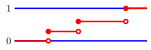
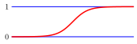
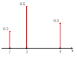
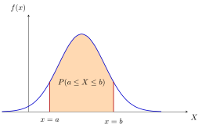
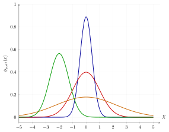
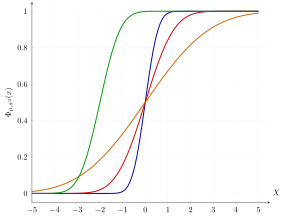
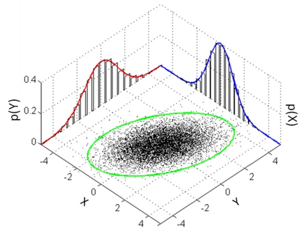

A random variable is a function that maps outcomes from a sample
space to a real number.
Example
Rolling two dice, we have
.
We can define several random variables on
.
Sum:
Larger of the two:
Indicator of doubles:
3.0.0.1 Discrete Random
Variables
X has a finite or countably infinite range of possible values.
3.0.0.2 Continuous Random
Variables
X takes values in an uncountable subset/interval of
.
Probability law of random
variables
For a probability space
,
and random variable
,
and for any set
,
the probability law/distribution of X is
Instead of discussing
on
,
we look at the push-forward measure of
by
,
where
is the likelihood of event
occuring.
The corresponding sample space is
.
We say that
follows the probability distribution
.
Proof that
is a valid probability measure:
For
,
(disjoint sets)
3.1 Cumulative Distribution
Function
The CDF of some discrete/continuous random variable
is

Discrete CDF

Continuous CDF
Properties:
is non-decreasing.
is right-continuous
().
.
3.2 Probability Mass Function
The PMF of some discrete random variable
is

Probability Mass Function
Properties:
E.g. For the probability that a dice roll is 3 or less, we sum the PMF
values for 1, 2, 3.
Referring to the discrete CDF graph, the height of each vertical jump
is equal to the probability
of that specific value.
The CDF
is right-continuous to ensure that
includes the probability of
itself
().
Example for number of "heads" in 2 coin flips:
,
= Number of
3.2.1 Bernoulli Distribution
A discrete random variable
with a Bernoulli Distribution takes two values,
and with probability mass function
Used to model scenarios with binary outcomes, like Heads or Tails.
3.2.2 Categorical Distribution
A random variable
with a Categorical Distribution takes one of K-discrete categories,
and with probability mass function
It is a multi-class extension of the Bernoulli Distribution. When
,
it becomes the Bernoulli Distribution.
3.3 Probability Density
Function
The PDF of some continuous random variable
is, (given some event A)

Properties:
,
when
is continuous.
PDF graph is the derivative of CDF graph, and CDF is the integral of the
PDF graph.
3.4 Gaussian/Normal
Distribution
The Gaussian Distribution has a symmetric bell curve shape.
Since it is a continous probability distribution, it can be modelled
by a PDF or CDF.
Gaussian/normal distribution
is the mean (center of the distribution / long-run arithmetic average
value).
is the variance (spread of the distribution).
The term
is the normalization constant required to satisfy the condition
.
The Standard Gaussian distribution is
.
3.4.0.1 Proportionality
()
The constant normalization factors is usually omitted for
simplification. A PDF is often written as
is the unnormalized function (containing
).
is the normalization constant (independent of
),
defined as
.
By extension, we can identify a Gaussian by Inspection. If a function
has the quadratic form in its exponent, it is a Gaussian distribution,
even if the constant is missing.
Example:
By completing the square in the exponent, we can identify this as
:
The term
is constant with respect to
and can be absorbed into the proportionality constant.


CDF of normal distribution
3.4.1 Gaussian Integral
To prove that the Gaussian PDF integrates to 1, we use the standard
Gaussian integral result:
By applying the change of variable
,
we can derive:
The general form of the Gaussian integral is
3.5 Bayesian Inference
Example
Context: A factory produces products labeled
with a weight of 100g.
Data (Observations): We sample
products with weights:
Likelihood Model: The actual weight
is known to follow a Gaussian distribution with variance
.
Prior Belief: Before seeing the data, we model
our uncertainty about the mean
using a Prior distribution.
i.e. we are guessing that the mean is 100 with a variance of 4.
3.5.1 The Goal
We wish to find the posterior distribution
,
which represents our updated belief about the mean
after observing the data.
Bayes’ Rule
Formulation
Using Bayes’ Rule, the posterior is proportional to the likelihood
times the prior:
Since the denominator
does not depend on
,
we treat it as a normalization constant and write:
Defining
the Components
1. The Likelihood Function
Since the samples are independent, the joint probability is the product
of individual probabilities:
. The Prior Function
Our prior belief is a single Gaussian centered at
:
The Combined
Equation
Multiplying the Likelihood and Prior (by adding their exponents):
3.5.2 The math
Expanding the
Squares
We expand the quadratic terms. Note that any term
not containing
is effectively a constant relative to
and can be absorbed into the proportionality constant.
Discarding terms without
(like
and
),
the relevant part of the exponent is:
Grouping
Coefficients
We group the terms by
and
:
This matches the standard Gaussian form
,
which expands to
.
3.5.3 The posterior parameters
By comparing coefficients, we derive the Posterior Variance
()
and Mean
():
Posterior Variance
():
Posterior Mean
():
Numerical
Calculation
We apply the values from the problem:
,
Data:
Prior:
,
Calculate Variance:
Calculate Mean:
Conclusion: The posterior distribution is
.
3.5.4 Interpretationss
The formulas:
1. Prior unconfidence
()
Imagine we have zero confidence in our prior belief (variance is
infinite).
As
,
the term
.
The prior effectively vanishes from the equation.
Limit of the Variance:
Limit of the Mean:
Interpretation: This recovers the
Frequentist Result. Without a prior, our best guess is
simply the sample mean
()
and the standard error depends purely on the data variance.
2.
Infinite Data
()
Imagine we collect a massive amount of data.
The prior information
()
becomes negligible compared to the weight of the evidence.
We are more confident that the real mean is the sample
mean.
Note that actual data (i.e. the factory machine) still has its
own variance. Our variance is the representation of our
confidence.
Limit of the Variance:
(Our uncertainty shrinks
to zero; we become perfectly confident).
Limit of the Mean:
(The estimate converges to
the true empirical average).
3.5.5 The core philosophy of
Bayesian Inference
The prior distribution compensates for the lack of data when the
sample size is small.
Small
:
The Prior
pulls the estimate towards our initial belief.
Large
:
Large sample size dominates, and the Prior is eventually
forgotten.
3.6 Multivariate Random
Variables
We now consider two random variables,
and
,
and assign probability to
.
For any set
,
This is a joint distribution on
.
3.6.1 Cumulative Distributive
Function
For two random variables
,
their CDF is
3.6.2 Joint Distribution/PMF
(Discrete)
For two random variables
,
their joint PMF is
Properties:
3.6.3 Marginal Distribution/PMF
(Discrete)
Given the joint PMF
,
the marginal distributions/PMFs of
and
are found by summing over all possible values of the other variable.
The marginal distributions are found in the margins of the table.
3.6.4 Conditional Distribution/PMF
(Discrete)
For discrete random variables
and
,
The probability of
given
.
Multiplicative Rule:
The Joint Probability is the product of the Marginal and the
Conditional.
3.6.5 Example (Sampling Without
Replacement)
Box contains 3 white and 3 black balls. Draw 2 balls without
replacement.
result of first draw
(
white,
black)
result of second draw
(
white,
black)
PMF:
Marginals:
We can conclude
and
are not independent.
Conditionals:
Since
and
,
the conditional distribution is:
Knowing the second ball is white makes the first less likely to be
white.
3.6.6 Joint Distribution/PDF
(Continuous)
For continuous random variables
and
,
where
is the joint PDF.
Properties:
3.6.7 Marginal Distribution/PDF
(Continuous)
Given the joint PDF
,
the marginal distributions/PDFs of
and
are found by integrating out the other variable.
Properties:
3.6.8 Conditional Distribution/PDF
(Continuous)
For continuous random variables
and
,
Multiplicative Rule:

Empirical Scatter PlotTheoretical PDF SurfaceComparison of Joint Probability Representations
Geometrically, the conditional PDF
is obtained by taking a cross-sectional slice of the joint density
surface at a fixed
,
then normalizing the resulting 1D curve to ensure its area integrates to
one.
3.7 Independence of Random
Variables
Two random variables
are independent if, for event sets
,